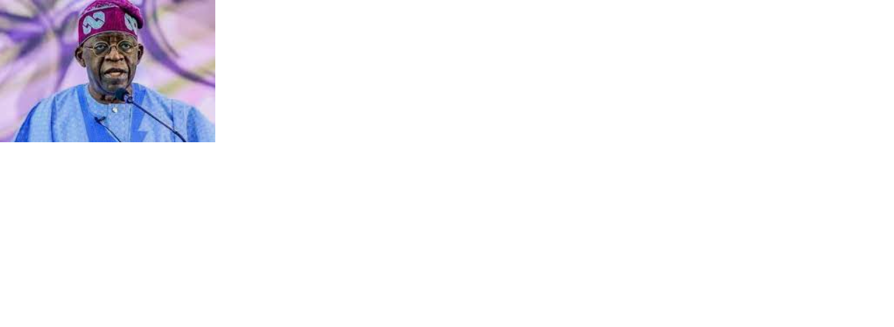
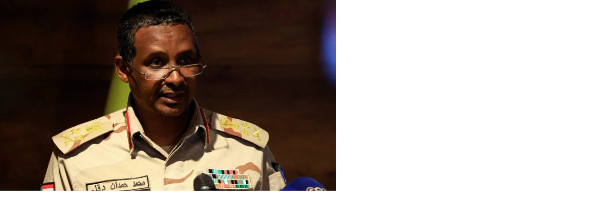
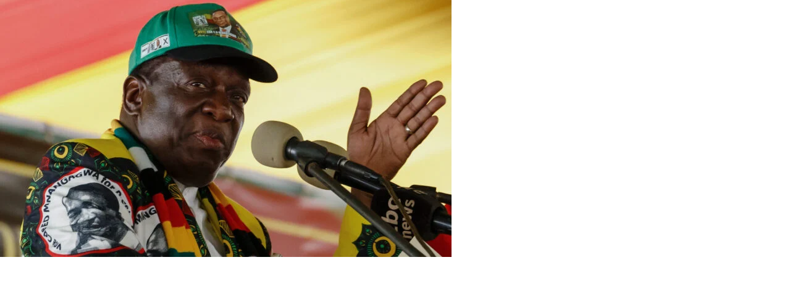
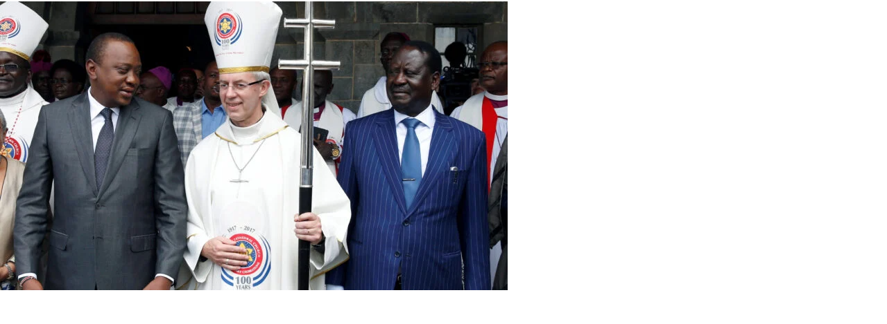
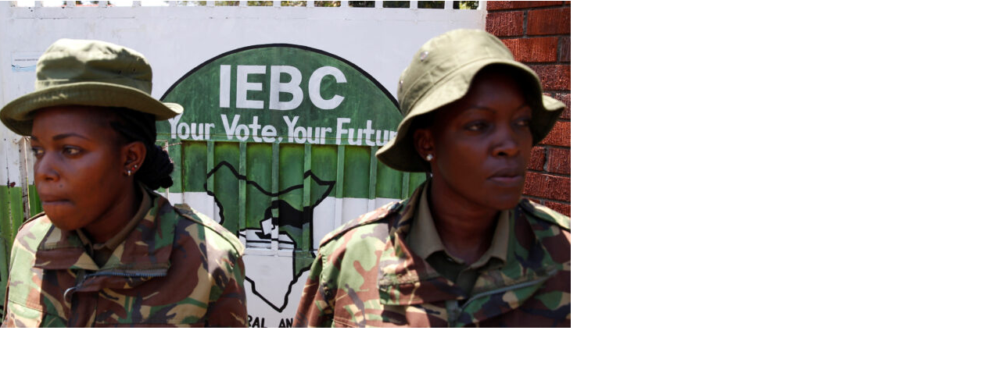
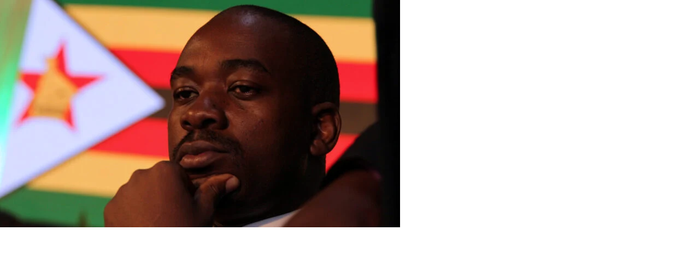

Nigeria's election shows a deeply divided country. That division is one area the president-elect Bola Tinubu promises to address upon assuming office on 29 May. It will go alongside a long list of other items, from security to fixing the collapsing currency, rebuilding trust in elections and fixing abysmal electricity provision.
Signs of a power struggle at the top of Sudan's ruling echelon are growing as the country's supposed transition to a civilian rule remains uncertain. In a bold assertion, Mohamed Dagalo - the deputy head of Sudan's ruling council - admitted in February that the 2021 coup, in which army leaders overthrew civilian authorities, was a "mistake".
Zimbabwe's government says its pending bill restricting non-governmental organisations aims to combat money laundering and threats to the state. Critics call it a naked attempt to give the ruling Zanu PF party a leg up in this year's presidential and parliamentary elections by kneecapping one of the country's few avenues for political accountability.
Tensions towards the LGBTQ community in Africa have risen after a statement from the Archbishop of Canterbury Justin Welby angered the Anglican community on the continent.
President William Ruto has appointed a seven-member selection panel to recruit a new board for the Independent Electoral and Boundaries Commission (IEBC), amidst calls to reach a consensus with the opposition.
Five months remain until Zimbabwe’s harmonised elections and President Emmerson Mnangagwa’s biggest contender is Nelson Chamisa, the leader of the opposition Citizens Coalition for Change (CCC). Chamisa has remained tight-lipped regarding his campaign strategies and party structures as a way to protect the party, but this formula could backfire, say analysts.
